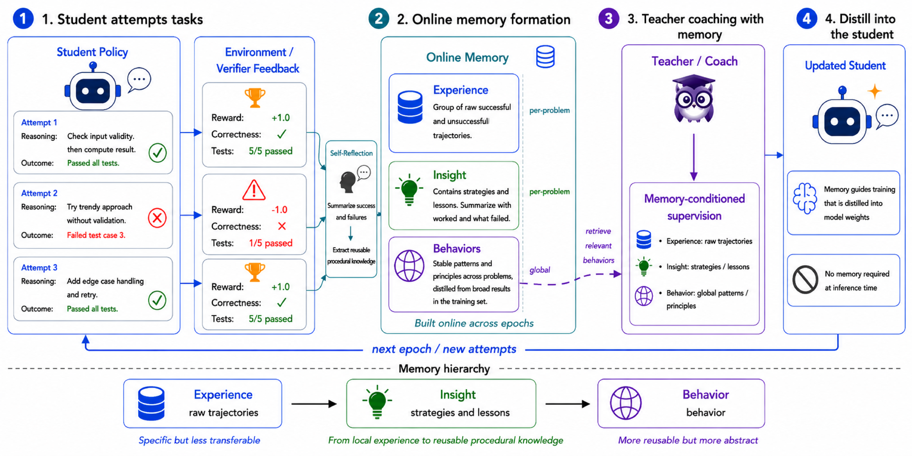
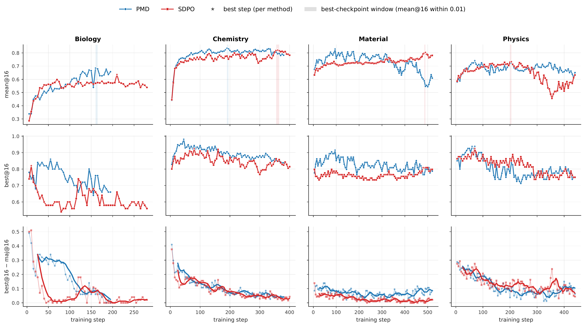
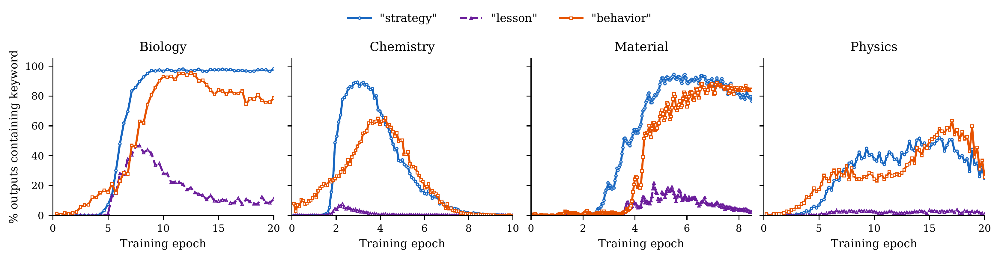
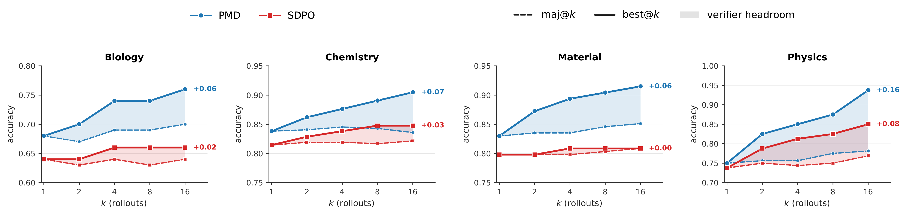

Online Reflection for Self-Improving Language Models
Reinforcement learning with verifiable rewards (RLVR), along with recent self-distillation variants such as SDPO, evaluates each rollout against a verifier and updates the policy from that episode-level signal. However, the richer procedural information in the rollout is rarely retained or reused. We propose Procedural Memory Distillation (PMD), which converts cross-episode signals into reusable procedural memory and distills it into the policy's weights during training. This memory functions as a training scaffold, absorbed into the policy itself, yielding a memory-free model at inference. PMD organizes the memory at three levels: raw trajectories, self-reflected strategies and lessons, and higher-level behavioral patterns. A memory-conditioned self-teacher draws on accumulated experience to supervise the student, enabling progressive internalization of procedural knowledge. The central design principle is co-evolution: the policy generates rollouts that update memory, and memory shapes the supervision that updates the policy.
RLVR and self-distillation methods such as SDPO usually learn from episode-local feedback: a rollout is verified, the policy is updated, and the richer procedural information in that rollout is discarded. PMD instead preserves cross-episode learning signals:
Which strategies consistently pass verification?
Which mistakes recur across attempts?
Which reasoning behaviors transfer across related problems?
How should memory evolve as the policy itself changes?
We propose a self-distillation framework that turns episode-local supervision into cross-episode procedural memory, built online from the model's own rollouts and distilled into the policy's weights. The resulting model reasons natively at inference, with no external memory dependency.
PMD updates policy and memory jointly: rollouts from the current policy refresh memory, and the refreshed memory shapes the supervision that trains the next policy. This online coupling distinguishes PMD from static or offline memory banks and powers the performance gains.
We propose experience, insight, and behavior memory, characterizing the fidelity-transfer trade-off across them. Experience memory preserves faithful evidence but remains local; behavior memory transfers broadly but can become coarse; insight memory strikes a balance by retaining problem-grounded lessons in compact form.
The student policy makes multiple attempts at solving problems and receives verifier feedback on correctness. Each rollout provides rewards, feedback, and concrete evidence of reasoning patterns.
Successes and failures are summarized into online procedural memory at three levels: raw trajectories (experience), strategies and lessons (insight), and cross-problem behavioral patterns (behavior).
The teacher retrieves relevant memory to provide richer supervision. The student distills this guidance into its weights, progressively internalizing procedural knowledge for memory-free inference.

Figure 1: Overview of Procedural Memory Distillation. The student makes attempts and receives verification, self-reflection builds procedural memory at three levels, the memory-conditioned teacher provides supervision, and guidance is distilled into the student for the next epoch.
| Method | Evolving Policy | Memory-Free Inference | Persistent Memory | Evolving Memory | Policy-Memory Co-Evolution |
|---|---|---|---|---|---|
| Base Model | ✗ | ✓ | ✗ | ✗ | ✗ |
| GRPO / RLVR | ✓ | ✓ | ✗ | ✗ | ✗ |
| SDPO / OPD | ✓ | ✓ | ✗ | ✗ | ✗ |
| Inference-Time Memory Agents | ✗ | ✗ | ✓ | ✓ | ✗ |
| PMD (Ours) | ✓ | ✓ | ✓ | ✓ | ✓ |
PMD uniquely combines evolving policy with persistent, evolving memory during training, while maintaining memory-free inference through distillation into model weights.
Raw trajectories, rollouts, rewards, and verifier feedback for each problem. Faithful but local evidence.
Self-reflected strategies from successful attempts and lessons from failures. Problem-grounded, compact, and reusable.
Cross-problem reasoning patterns distilled from clustered insights. Broadly transferable but more abstract.
Figure 1: The three-level procedural memory hierarchy in PMD. Each level represents a different trade-off between fidelity and transferability.
Over SDPO baseline on science reasoning tasks
Over SDPO baseline on code generation tasks
| Method | Biology | Chemistry | Physics | Materials | AVG |
|---|---|---|---|---|---|
| Base Policy | 32.4 | 41.6 | 58.5 | 59.2 | 47.9 |
| GRPO | 63.2 | 73.2 | 70.6 | 70.7 | 69.4 |
| SDPO | 63.6 | 80.6 | 72.8 | 80.4 | 74.4 |
| PMD (Ours) | 68.5 | 82.8 | 74.7 | 82.9 | 77.2 |
Table 1: SciKnowEval results with Qwen3-8B. PMD consistently outperforms GRPO and SDPO across all scientific domains, achieving 3.8% improvement over SDPO on average.
| Model | Method | SciKnowEval AVG | LiveCodeBench v6 |
|---|---|---|---|
| Qwen3-8B | Base Policy | 47.9 | 27.1 |
| GRPO | 69.4 | 41.2 | |
| SDPO | 74.4 | 47.9 | |
| PMD | 77.2 | 51.7 | |
| OLMo3-Instruct-7B | Base Policy | 27.7 | 27.7 |
| GRPO | 63.9 | 36.1 | |
| SDPO | 69.5 | 45.0 | |
| PMD | 73.3 | 51.1 |
Table 2: Comprehensive comparison across both model families and benchmarks. PMD achieves consistent improvements over strong baselines.
PMD demonstrates consistent performance improvement across training epochs. The co-evolution of policy and memory enables the model to progressively internalize procedural knowledge, resulting in steady gains throughout the training process.

Figure 2: Training dynamics showing performance improvement across epochs for both Qwen3-8B and OLMo3-Instruct-7B models. PMD achieves consistent gains over SDPO baseline.
Freezing either memory or policy substantially underperforms full PMD, showing that memory must stay aligned with the changing policy. The tight coupling between policy evolution and memory updates is crucial for performance gains.

Figure 3: Memory internalization analysis across different ablations. Freezing either component (memory or policy) leads to significant performance degradation compared to full co-evolution.
PMD preserves broader answer-space coverage than SDPO, leaving more headroom for verifier reranking and best-of-N sampling. This enables better scaling with additional inference-time compute, opening 2-4× wider verifier headroom on SciKnowEval.

Figure 4: Answer coverage and pass@k scaling behavior. PMD maintains higher diversity in generated answers while achieving better pass@k performance across different k values.
Co-evolution is essential. PMD improves over SDPO by 3.8-5.5% on SciKnowEval and 7.9-13.6% on LiveCodeBench. Freezing either the memory or the policy trails PMD by more than 10% across domains, confirming that joint evolution of policy and memory is crucial for performance gains.
Memory-free inference with training-time scaffolding. Unlike memory-augmented agents that rely on external memory at inference time, PMD uses procedural memory only during training. The student progressively internalizes this knowledge, yielding a memory-free model that reasons natively without retrieval overhead.
Better test-time compute scaling. PMD continues to gain from additional rollouts where SDPO saturates, widening the gap with the rollout budget and opening 2-4× wider verifier headroom on SciKnowEval. This demonstrates superior utilization of inference-time computation.